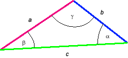

The law of sines is a set of equations true for any triangle. It states that the ratio "sine of an angle divided by the length of the opposite side" is the same for any pair of angle and opposite side.
The diagram in Figure 1 below illustrates a general triangle. The three sides are labeled a, b, c, and the three angles are labeled a, b, g.

Figure 1
The law-of-sines equations are
(sin a)/a =
(sin b)/b = (sin g)/c .  (1)
(1)
A triangle is determined by three of its elements. If you are given two sides and an angle opposite to one of the sides, the law of sines lets you to determine the angle opposite to the other side.